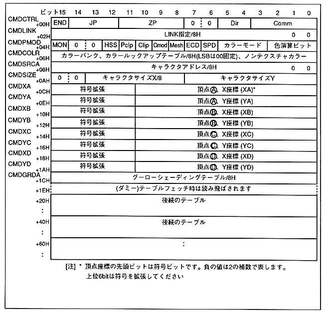

Return to previous page ｜ Return to menu ｜ Go to next page
-
■ 5.4 Command table
- The command table consists of 1EH (30) Bytes. The command table is fetched every 20H (32) bytes, so define it with the 20H boundary. The 2 bytes following the command table are dummy and are skipped when fetching the command table.
The command table stored in VRAM is fetched from the top address (00000H) every frame. Be sure to store the command table at addresses 00000H to 0001EH. Drawing operations other than the command table (color lookup table, Gouraud shading table, character pattern table) are not guaranteed. VRAM is up to 7FFFFH. Do not define a Gouraud shading table beyond address 80000H.
Figure 5.5 Command table

Return to previous page ｜ Return to menu ｜ Go to next page